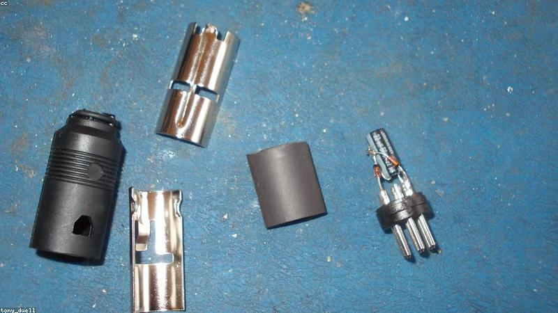

NO. 03
錄音筆裡的早安
有些愛，安靜得像呼吸，我們卻以為理所當然。
爺爺生前有支舊錄音筆，他以為是老人家玩票。整理遺物時，不小心按到播放，傳出一句：「孫子，今天天氣冷，多穿一件。」
他往下聽，是連續好幾年的錄音。每天一句，有時提醒帶傘，有時說「今天煮了你愛的湯」。最後一條聲音很虛弱：「孫子，爺爺可能沒法錄了，你要好好吃飯。」
他才發現，錄音筆放在爺爺床頭，正對著他房間的方向。原來老人家每天睡前，都對著那頭的黑暗，說一句話。
他把手機鬧鐘換成了爺爺的聲音。每天早上，房間裡會響起：「孫子，早安，今天也要加油。」